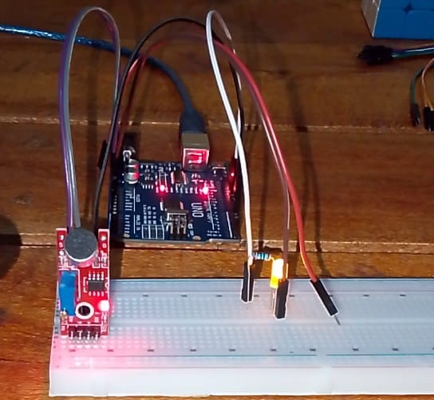

Project Overview

The Arduino Clap Switch is a sound-activated control system. Instead of using manual switches, it uses a sound sensor to "listen" for sudden spikes in ambient noise (like a clap). When a clap is detected, the Arduino toggles the state of an LED(either HIGH OR LOW). This project is a foundational step toward Voice Automation and Smart Home systems.
Components Used
- Arduino Uno
- Sound sensor module
- LED
- 220Ω Resistor
- Breadboard
- Jumper Wires
How It Works
The sound sensor module has:
- A microphone
- An amplifier
- A comparator
Arduino Code
int soundPin = 2;
int ledPin = 8;
int ledState = LOW;
int lastSoundState = LOW;
void setup() {
pinMode(soundPin, INPUT);
pinMode(ledPin, OUTPUT);
}
void loop() {
int currentSoundState = digitalRead(soundPin);
// Detect rising edge (clap detected)
if (currentSoundState == HIGH && lastSoundState == LOW) {
ledState = !ledState; // Toggle LED
digitalWrite(ledPin, ledState);
delay(300); // Debounce delay
}
lastSoundState = currentSoundState;
}